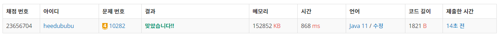

👀 문제
https://www.acmicpc.net/problem/10282
👊 도전
1. 설계
- 다익스트라를 이용하여 노드에서 다른 노드로 가는 최소 weight를 기준으로 이동한다.
- 처음 방문하는 노드이면 cnt++하여 전파되는 컴퓨터의 개수를 센다.
- dist[] 배열에서 INF 값을 제외한 최댓값이 감염되는 최소시간이 된다.
2. 구현 (성공 코드)
1
2
3
4
5
6
7
8
9
10
11
12
13
14
15
16
17
18
19
20
21
22
23
24
25
26
27
28
29
30
31
32
33
34
35
36
37
38
39
40
41
42
43
44
45
46
47
48
49
50
51
52
53
54
55
56
57
58
59
60
61
62
63
64
65
66
67
68
69
70
71
72
73
74
75
76
77
78
79
80
81
82
import java.util.*;
import java.io.*;
/**
* @author HEESOO
*
*/
class Main {
static int[] dist;
static ArrayList<ArrayList<Node>> list;
static int cnt;
public static void main(String[] args) throws IOException {
BufferedReader br=new BufferedReader(new InputStreamReader(System.in));
StringTokenizer st;
int tc=Integer.parseInt(br.readLine());
while(tc-->0) {
st=new StringTokenizer(br.readLine());
int n=Integer.parseInt(st.nextToken()); // 총 컴퓨터 수
int d=Integer.parseInt(st.nextToken()); // 감염 정보 수
int c=Integer.parseInt(st.nextToken()); // 시작 컴퓨터
dist=new int[n+1]; // 0번은 사용 안함
Arrays.fill(dist, Integer.MAX_VALUE); // INF로 초기화
list=new ArrayList<>();
for(int i=0;i<=n;i++)
list.add(new ArrayList<>());
cnt=1; // 시작 컴퓨터는 이미 감염되었으므로
PriorityQueue<Node> pq=new PriorityQueue<>();
pq.offer(new Node(c, 0));
dist[c]=0; // 시작 노드이므로 0으로 초기화
for(int i=0;i<d;i++) {
st=new StringTokenizer(br.readLine());
int a=Integer.parseInt(st.nextToken());
int b=Integer.parseInt(st.nextToken());
int s=Integer.parseInt(st.nextToken());
list.get(b).add(new Node(a, s)); // b->a로 감염됨
}
solve(pq);
// dist에서 INF를 제외한 새 배열 생성
int[] result=Arrays.stream(dist).filter(k->k!=Integer.MAX_VALUE).toArray();
Arrays.sort(result);
System.out.println(cnt+" "+result[result.length-1]);
}
}
public static void solve(PriorityQueue<Node> pq) {
while(!pq.isEmpty()) {
Node node=pq.poll();
// 내 weight가 계산된 dist보다 크다면 갱신할 필요 없음
if(node.weight>dist[node.idx]) continue;
for(Node n:list.get(node.idx)) { // node에서 갈 수 있는 n
// n으로 가는 것 중 node에서 n으로 가는 경우가 더 최단이라면
if(dist[n.idx]>dist[node.idx]+n.weight) {
if(dist[n.idx]==Integer.MAX_VALUE) cnt++; // n 방문이 처음이라면
dist[n.idx]=dist[node.idx]+n.weight;
pq.offer(new Node(n.idx, dist[n.idx]));
}
}
}
}
}
class Node implements Comparable<Node>{
int idx;
int weight;
public Node(int i, int w) {
this.idx=i;
this.weight=w;
}
@Override
public int compareTo(Node n) { // weight 기준 오름차순 정렬
return this.weight-n.weight;
}
}
3. 결과
 🤟 성공 🤟
4. 설명
- 초기화 및 다익스트라 실행 준비
- 컴퓨터 인덱스는 1부터 시작하므로 dist, list를 n+1 크기로 생성한다.
- cnt는 감염 컴퓨터 개수로, 시작 컴퓨터가 이미 감염되었으므로 1로 초기화한다.
- 우선순위 큐 pq에 시작 노드를 넣는다.
- 다익스트라
- pq는 우선순위 큐이기 때문에 weight(감염 시간)이 작은 순으로 뽑힌다.
- 뽑힌 노드 node의 weight를 체크하여 node에서 다음으로 이동할 수 있는지 확인해야 한다.
- 예를 들어, 테스트케이스 2에서 1->3으로 가는 것 보다 1->2->3으로 가는 게 최단이다. 이를 거르는 작업이 처음 if문이다.
- for문을 통해 node에서 갈 수 있는, 연결된 노드 n을 하나씩 체크한다.
- n으로 가기 위해 node에서 n으로 가는 것이 기존 방법보다 최단이면 해당 값으로 갱신한다.
- 이때 n이 처음 방문하는 노드라면 cnt++하여 감염된 컴퓨터가 하나 늘었음을 표시한다.
- pq에 삽입하여 n에서 갈 수 있는 노드들을 확인할 수 있도록 한다.
- 감염 수와 최소 시간을 출력한다
- 감염 수는 cnt를 출력하면 된다.
- 최소 시간은 dist에서 INF(Integer.MAX_VALUE)를 제외한 최댓값을 출력하면 된다.
- 처음에는 max 변수를 두고 dist 배열에 값이 변경될 때마다 Math.max()를 이용하여 최댓값을 저장하도록 했는데, 그러면 기존 dist[i]보다 더 작은 dist[i]를 발견하여 값을 수정하였을 때, max에도 수정된 값으로 들어가야하지만 Math.max()로 인해 값이 갱신되지 않음을 알았다.
- 따라서 람다식을 이용하여 dist에서 INF를 제외한 배열을 새로 만든 뒤(result), 이를 오름차순 정렬하여 마지막 값을 뽑았다.
👏 해결 완료!
참고
- [백준 10282] - 해킹 https://soobarkbar.tistory.com/113